Лучшие средства для бровей: рейтинг и советы визажистов
Правильный уход и оформление бровей помогает подчеркнуть естественную красоту лица. В этом обзоре мы собрали популярные средства: гели, карандаши, тени и помады для бровей, подходящие для разных типов кожи и текстур волос.
Консультации / Записаться
Популярные обзоры по бровям
Укладка бровей
Способы придать аккуратную форму и фиксацию волосков.
Типы бровей
Различия по густоте, цвету и структуре волосков.
Формы бровей
Выбор идеальной формы для вашего лица.
Коррекция карандашом и пинцетом
Как правильно оформлять и корректировать брови.
Средства для ухода и окрашивания
Гели, тени, помады и масла для бровей.
Как подобрать форму бровей по типу лица
Советы по выбору идеальной формы бровей для круглого, овального и квадратного лица.
Лучшие карандаши для бровей
Подборка популярных карандашей для естественного макияжа бровей.
Как отрастить густые брови
Эффективные способы ухода и средства для укрепления и роста бровей.
Лучшие гели для бровей
Популярные средства для укладки бровей: Benefit 24-HR Brow Setter, Anastasia Brow Freeze и NYX Control Freak.
Лучшие тени для бровей
Натуральный макияж бровей с палетками Anastasia Brow Powder Duo, NYX Eyebrow Cake Powder и Benefit Brow Zings.
Трафареты и наборы для коррекции бровей
Наборы для идеальной формы: Anastasia Stencils, Ardell Brow Perfection Kit и Real Techniques Brow Set.
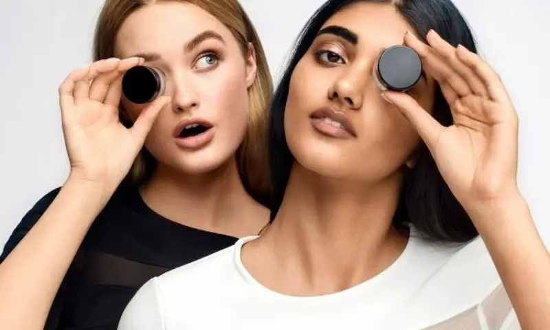
Укладка бровей
Укладка бровей придаёт аккуратный и ухоженный вид. Для фиксации и моделирования формы используются воск, гель и щётка. Правильный выбор средств делает взгляд выразительным и аккуратным.
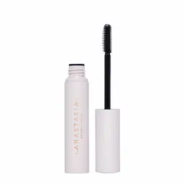
Фиксирует брови и моделирует форму на весь день
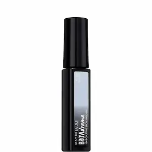
Гель фиксирует волоски, придавая естественный блеск
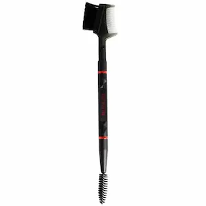
Щётка для равномерного нанесения и аккуратной растушевки
| Средство | Особенности |
|---|---|
|
Anastasia Beverly Hills Brow Wax
Фиксирует форму бровей на весь день, удерживает волоски в нужном направлении. |
Фиксация и моделирование |
|
Maybelline Brow Drama Sculpting Gel
Гель с натуральным блеском, фиксирует волоски и придаёт аккуратный вид. |
Фиксация и блеск |
|
Revlon Brow Brush
Щётка для равномерного распределения продукта и аккуратной растушевки. |
Укладка и растушевка |
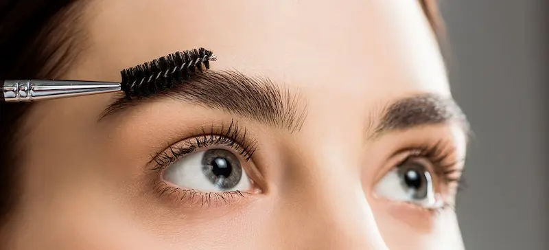
Типы бровей
Брови бывают разной формы и густоты: редкие, густые, прямые, дугообразные и изогнутые. Для окрашивания и усиления формы используют карандаши, тени и гели.
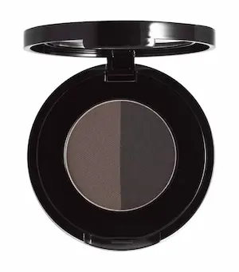
Подходит для всех типов бровей, создаёт мягкий естественный эффект

Карандаш для прорисовки и заполнения редких участков
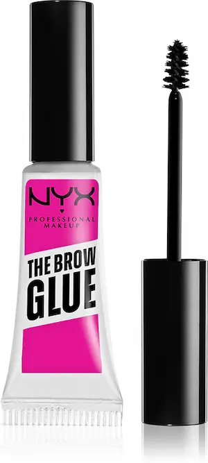
Гель для придания формы и лёгкого окрашивания бровей
| Средство | Особенности |
|---|---|
|
Anastasia Beverly Hills Brow Powder
Мягко заполняет брови, подходит для всех типов и форм. |
Заполнение и моделирование |
|
Maybelline Brow Precise Micro Pencil
Тонкий карандаш для прорисовки редких волосков и естественного контура. |
Прорисовка и точность |
|
Revlon Brow Shaping Gel
Гель фиксирует форму и слегка окрашивает брови. |
Форма и лёгкое окрашивание |

Формы бровей
Форма бровей помогает подчеркнуть черты лица. Популярные формы: дугообразные, прямые, мягко изогнутые и с лёгким подъёмом. Выбор формы зависит от структуры лица и густоты волосков.
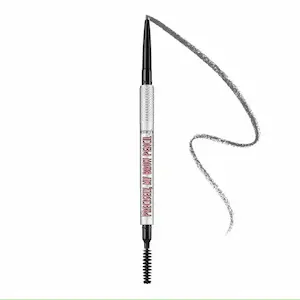
Карандаш для точного формирования и создания мягкой дугообразной формы
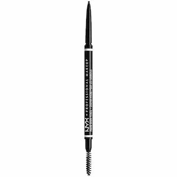
Тонкий карандаш для создания естественной линии и аккуратной формы
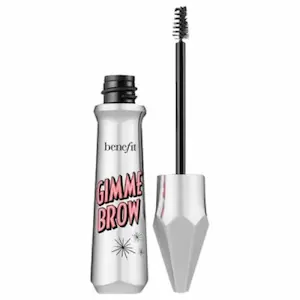
Популярный гель для бровей с микроволокнами.
| Продукт | Особенности |
|---|---|
|
Benefit Goof Proof Brow Pencil
Карандаш с мягкой текстурой, позволяет формировать дугообразную форму и заполнять пробелы. |
Моделирование и заполняемость |
|
NYX Micro Brow Pencil
Тонкий карандаш для естественной линии и точного прорисовывания волосков. |
Аккуратная и естественная форма |
|
Glossier Boy Brow
Гель для объёма, подчёркивает форму и фиксирует волоски на весь день. |
Объём и лёгкая фиксация |
Коррекция бровей
Правильная коррекция помогает поддерживать форму бровей и аккуратно удалять лишние волоски. Используйте пинцет, ножницы и щипцы для профессионального результата дома.
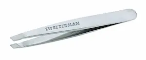
Пинцет из нержавеющей стали с наклонным краем для точного захвата волосков
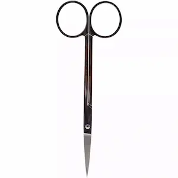
Маленькие ножницы для аккуратной подрезки длинных волосков
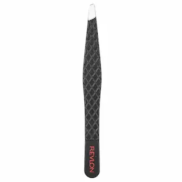
Высококачественный пинцет помогает точно захватывать даже короткие волоски
| Продукт | Особенности |
|---|---|
|
Tweezerman Stainless Steel Slant Tweezer
Высококачественный пинцет с наклонным краем для точного удаления волосков и создания идеальной формы. |
Точная коррекция волосков |
|
Shu Uemura Brow Scissors
Мини-ножницы для аккуратного подравнивания длинных волосков без повреждения формы. |
Подрезка и аккуратность |
|
Revlon Designer Series Slant Tweezert
Удобный пинцет из нержавеющей стали со скошенным наконечником, который помогает точно захватывать даже короткие волоски. Хорошо подходит для домашней коррекции формы бровей. |
Помогает точно захватывать даже короткие волоски |
Средства ухода за бровями
Для здоровых и густых бровей важно использовать специальные средства ухода: сыворотки для роста, укрепляющие масла и кондиционеры. Они делают волоски сильнее, предотвращают выпадение и придают естественный блеск.

Сыворотка для ускоренного роста бровей и укрепления волосков
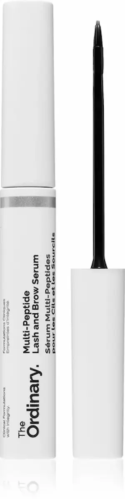
Популярная сыворотка с пептидами и аминокислотами
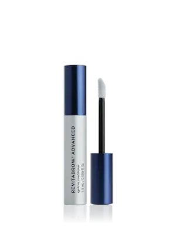
Кондиционер для бровей: увлажнение, блеск и мягкость волосков
| Продукт | Особенности |
|---|---|
|
RapidBrow Eyebrow Enhancing Serum
Сыворотка для ускоренного роста и укрепления волосков, подходит для всех типов бровей. |
Укрепление и рост волосков |
|
The Ordinary Multi-Peptide Lash and Brow Serum
Популярная сыворотка с пептидами и аминокислотами. Лёгкая формула быстро впитывается и подходит для ежедневного ухода. |
Питание и блеск |
|
RevitaBrow Advanced
Кондиционер для бровей с пептидами и питательными компонентами (для густоты) |
Увлажнение и мягкость |
Нужен профессиональный макияж?
Если вы хотите подобрать идеальный тон или сделать профессиональный макияж, обратитесь к опытному визажисту.
Посмотреть услуги бровиста
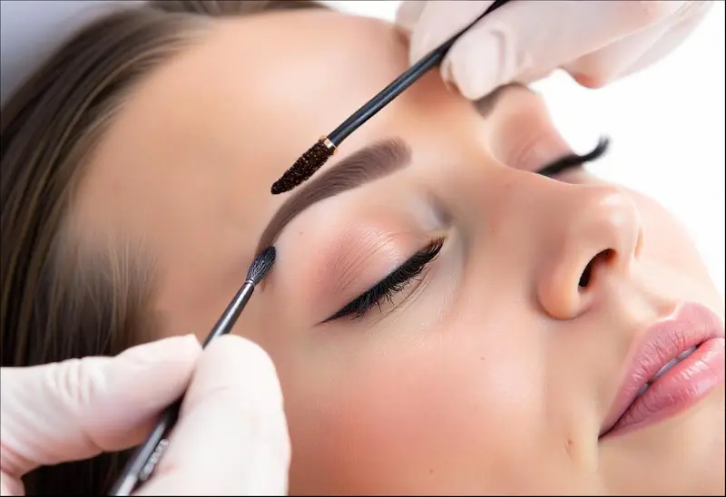
Советы бровиста: секреты идеальных бровей
Следуя этим рекомендациям, вы сможете поддерживать ухоженные, выразительные брови каждый день!

Лучшие карандаши для бровей
Карандаш для бровей помогает заполнить пробелы между волосками, скорректировать форму и создать более густой вид. Для естественного результата выбирайте оттенок, близкий к цвету ваших бровей.
Для более натурального эффекта наносите карандаш короткими штрихами, имитируя волоски, и растушёвывайте щёточкой.
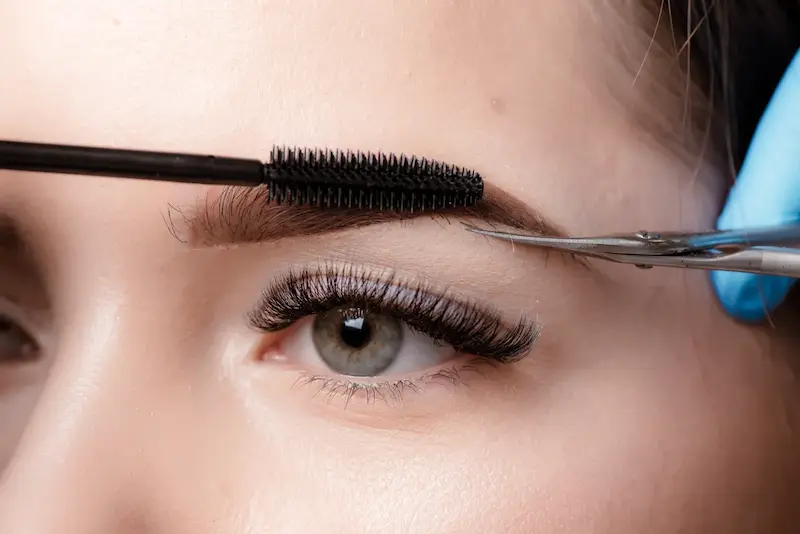
Как подобрать форму бровей по типу лица
Правильно подобранная форма бровей может визуально изменить пропорции лица и подчеркнуть его достоинства. При выборе формы важно учитывать естественную линию роста волос и тип лица.
Главное правило — сохранять естественность. Слишком тонкие или чрезмерно графичные брови могут выглядеть неестественно.

Как отрастить густые брови
Густые брови остаются одним из главных трендов в макияже. Если брови стали редкими из-за частой коррекции, правильный уход поможет восстановить их рост.
При регулярном уходе первые результаты можно заметить уже через несколько недель.
Лучшие гели для бровей для укладки и фиксации
Гели для бровей помогают уложить волоски, закрепить форму и сохранить аккуратный вид бровей на протяжении всего дня. Современные формулы позволяют создать эффект ламинирования и подчеркнуть естественную густоту бровей.

Сильная фиксация и эффект ламинирования
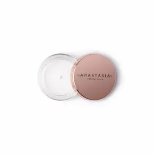
Популярный воск для укладки бровей
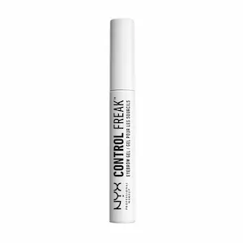
Лёгкий гель для естественной укладки
| Гель для бровей | Особенности |
|---|---|
|
Benefit 24-HR Brow Setter
Один из самых популярных гелей для фиксации бровей. Двусторонняя щёточка позволяет аккуратно распределять средство и создавать эффект ламинированных бровей. |
Сильная фиксация до 24 часов |
|
Anastasia Brow Freeze
Прозрачный воск-гель с очень сильной фиксацией. Часто используется визажистами для создания модного «fluffy brow» эффекта. |
Профессиональная укладка |
|
NYX Control Freak
Бюджетный гель, который аккуратно укладывает волоски и сохраняет естественный вид бровей без эффекта склеивания. |
Лёгкая фиксация и натуральный результат |
Лучшие тени для бровей для натурального макияжа
Тени для бровей помогают мягко заполнить пробелы между волосками и создать максимально естественный макияж. Они идеально подходят для дневного образа и позволяют легко регулировать интенсивность цвета.
Профессиональные тени для бровей
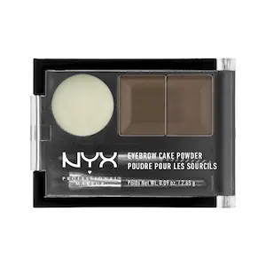
Популярный бюджетный набор
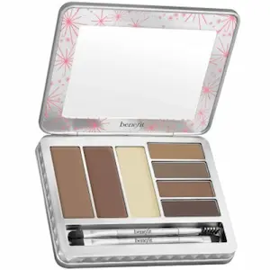
Палетка для коррекции бровей
| Тени для бровей | Особенности |
|---|---|
|
Anastasia Brow Powder Duo
Профессиональная палетка из двух оттенков, которая помогает создать натуральный градиент и аккуратно подчеркнуть форму бровей. |
Натуральный результат |
|
NYX Eyebrow Cake Powder
Компактный набор с тенями и воском для фиксации. Хороший вариант для мягкого дневного макияжа. |
Бюджетный и удобный |
|
Benefit Brow Zings
Набор с тенями, воском и кистями для полноценной коррекции бровей. Помогает создать аккуратную форму и подчеркнуть густоту бровей. |
Комплексная коррекция |
Трафареты и наборы для коррекции бровей
Трафареты и специальные наборы помогают быстро создать симметричную форму бровей. Они особенно полезны для начинающих и позволяют легко поддерживать аккуратный внешний вид бровей дома.
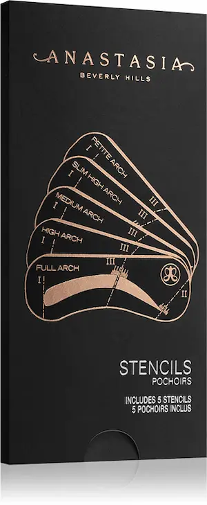
Профессиональные трафареты для бровей
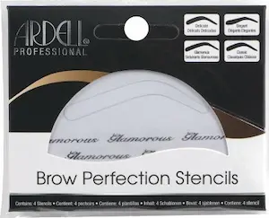
Набор для коррекции бровей
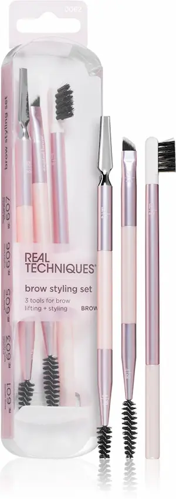
Набор инструментов для бровей
| Набор для бровей | Особенности |
|---|---|
|
Anastasia Brow Stencils
Набор трафаретов с несколькими формами бровей. Помогает быстро подобрать подходящую форму и добиться симметрии. |
Разные формы бровей |
|
Ardell Brow Perfection Kit
Компактный набор с тенями, пинцетом и кистями для полноценной коррекции бровей. |
Набор для домашнего ухода |
|
Real Techniques Brow Set
Набор профессиональных инструментов для укладки и макияжа бровей, включая щёточки и кисти. |
Инструменты для точной коррекции |
Частые ошибки при оформлении бровей
Чтобы брови выглядели естественно и аккуратно, важно учитывать форму лица, правильно подбирать оттенок средств и не переусердствовать с коррекцией.
Часто задаваемые вопросы о бровях
Как подобрать форму бровей?
Форма бровей должна соответствовать овалу лица. Например, мягкая дуга подходит для круглого лица, а более прямые брови — для овального или вытянутого.
Что лучше использовать для коррекции бровей?
Для удаления лишних волосков чаще всего используют пинцет. Для более стойкого результата применяют восковую коррекцию или нить.
Какой продукт лучше для ежедневного макияжа бровей?
Для естественного результата подойдут карандаш или тени для бровей. Гель поможет зафиксировать форму и аккуратно уложить волоски.
Как сделать брови визуально гуще?
Используйте карандаш или помаду для прорисовки тонких штрихов, имитирующих волоски. Дополнительно можно применять сыворотки и масла для роста бровей.